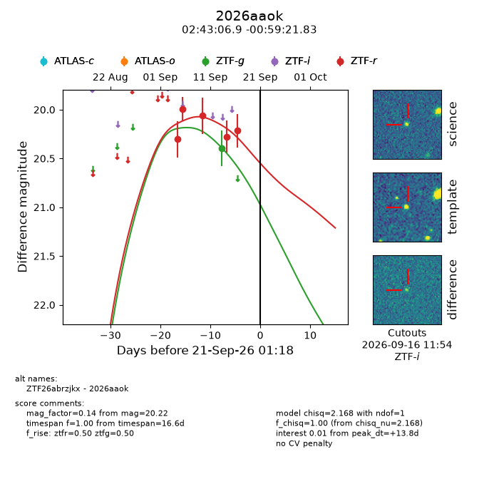
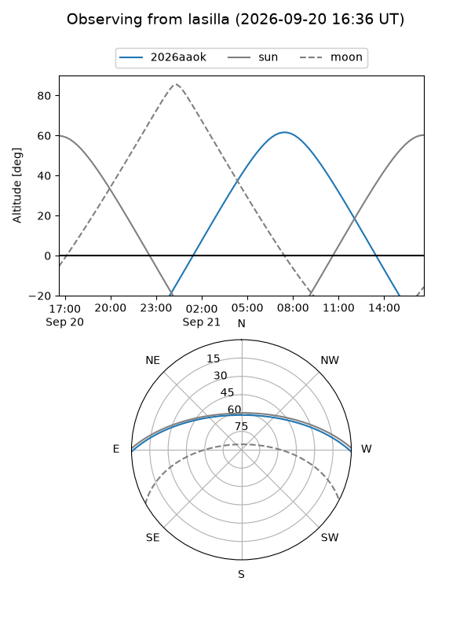
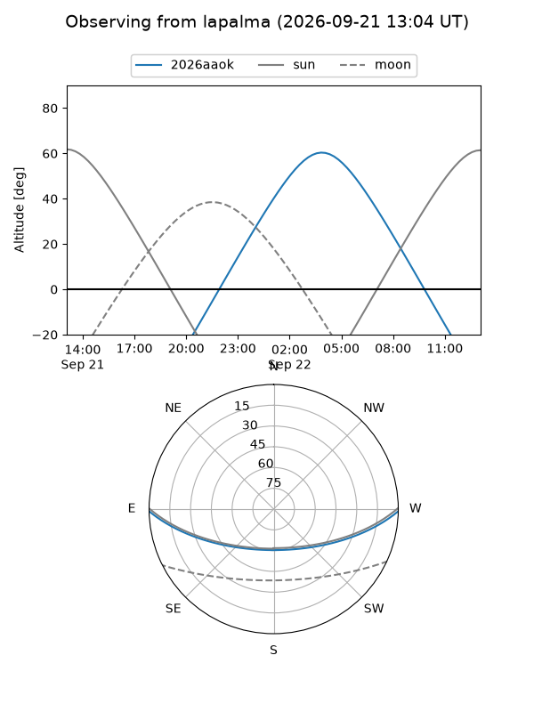
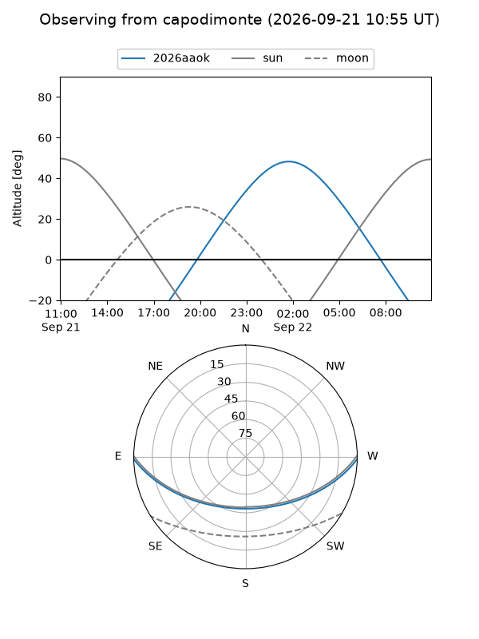
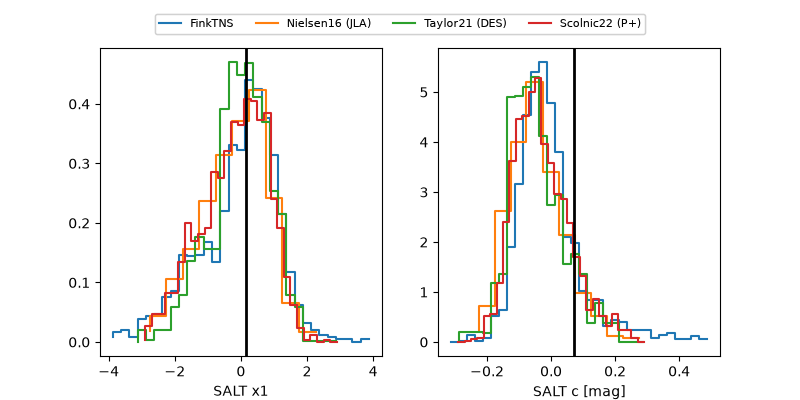

2026aaok
Target 2026aaok at 2026-09-21 12:55
Aliases and brokers:
FINK-ZTF: ztf.fink-portal.org/ZTF26abrzjkx
Lasair-ZTF: lasair-ztf.lsst.ac.uk/objects/ZTF26abrzjkx
ALeRCE-ZTF: alerce.online/object/ZTF26abrzjkx
YSE-PZ: ziggy.ucolick.org/yse/transient_detail/2026aaok
TNS name: wis-tns.org/object/2026aaok
Direct TNS query: direct search
alt names
ZTF26abrzjkx (ztf,fink_ztf)
2026aaok (tns,yse)
Coordinates:
equatorial (ra, dec) = 40.7788,-0.98940
equatorial (HMS+DMS) = 02:43:06.92,-00:59:21.83
galactic (l, b) = (173.3182,-52.57567)
Flags:
TNS type: nan
peak dt: +14.3
Photometry:
last ztfg=20.39, ztfr=20.22
1 ztfg, 5 ztfr detections
Lightcurve

Visibility



Additional plots
